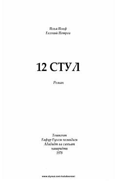

1SXazina yashirilgan stulni izlayotgan qahramonlarning qiziqarli va hajviy sarguzashtlari.
Mazkur roman mashhur sovet yozuvchilari Ilya Ilf va Yevgeniy Petrov qalamiga mansub bo'lib, unda qimmatbaho xazina yashirilgan stulni izlayotgan qahramonlarning sarguzashtlari hikoya qilinadi. Asar o'zining o'tkir hajviy uslubi va qiziqarli syujet burilishlari bilan jahon adabiyotining durdona asarlaridan biri hisoblanadi.